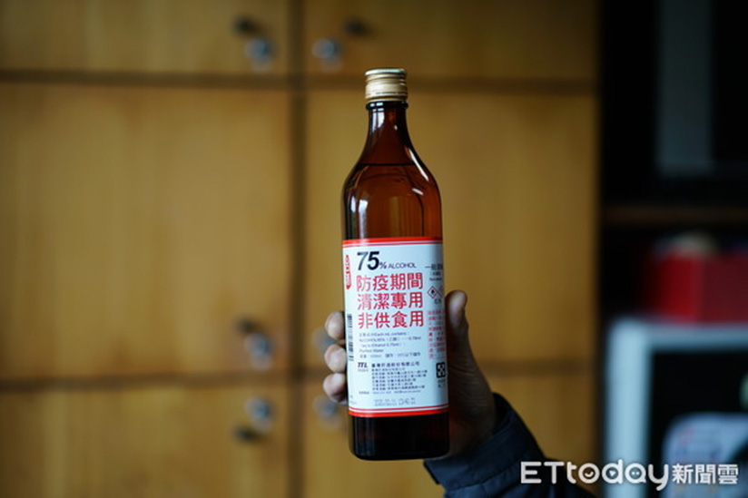
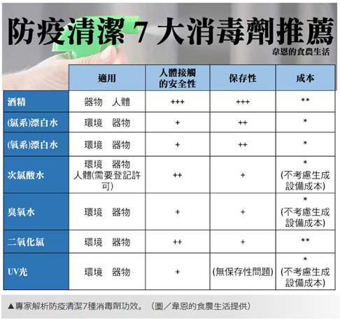
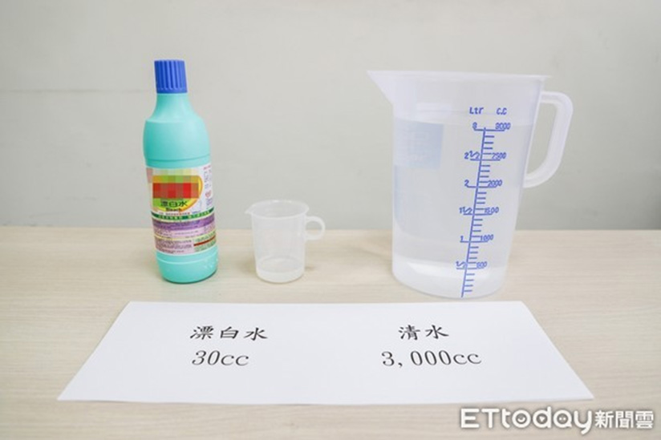
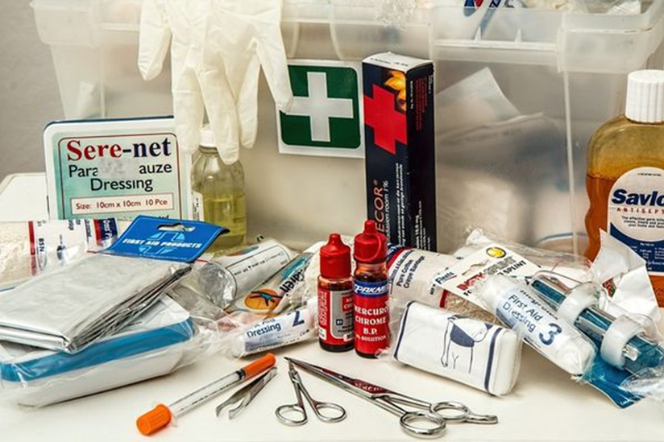
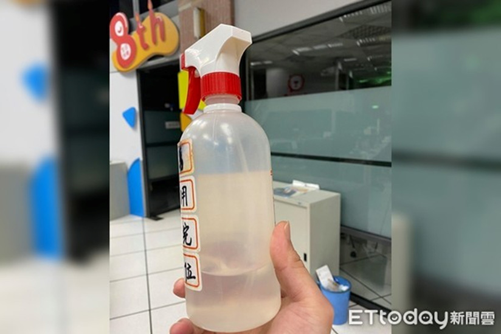
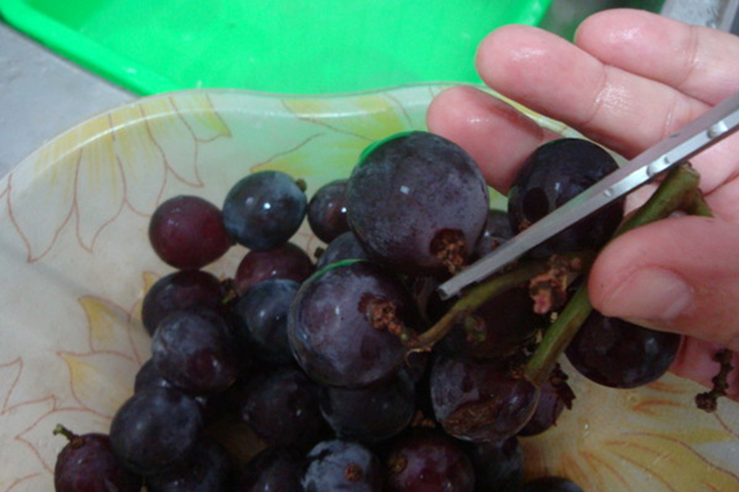
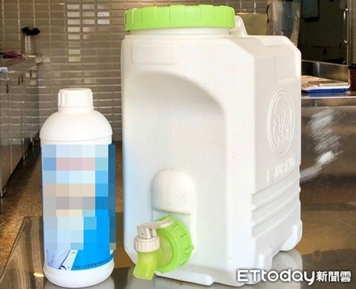

新聞中心 > 常用消毒殺菌產品介紹
不只酒精！「7種消毒劑」懶人包 適用物品、注意事項一次看

1.酒精

酒精是最容易取得、也最適合一般民眾使用的清潔消毒用品。酒精一般指的就是乙醇，可以用藥房賣的95%藥用酒精，或是台灣菸酒公司賣的95%食用酒精，而台灣因為稅法的關係，另外還有一種粉紅色的變性酒精，那是加入了變性劑讓它不適合飲用，但是一樣可以做消毒用途。 酒精適合殺病毒的濃度在60%～80%，所以除了95%酒精以外，市面上另外也買得到已經調好的75%的酒精，可以直接使用。而99%的無水酒精比較不容易買到，它一方面很貴，一方面也因為過於易燃所以保存上不太安全，不推薦大眾使用。
適用器物人體
注意如果是食器消毒的話，最好使用食用酒精。而皮膚太常噴酒精的話，因為酒精會去除皮脂，因此會造成皮膚太過乾燥，甚至龜裂的情形，所以要注意滋潤保濕。
如何使用
酒精適合殺病毒的濃度在60%～80%，所以平常最普通的用法是稀釋到70%至75%來使用，我們如果買到的是95%酒精，一個簡單的稀釋法，那就可以用3加1的稀釋法：也就是用3杯的95%酒精加上1杯的水，均勻混合後，那就是大約71%的適當濃度。當然也可以用4加1的稀釋法，那就會得到大約74%的濃度，兩者都同樣適用。 環境大範圍的消毒不適合使用酒精，因為酒精是易燃物，如果大量揮發在密閉空間裡會有火災、爆炸的危險性，對人體也有刺激性。
注意事項
- 酒精消毒需要接觸1～10分鐘以上，才能發揮效果，所以不要急著把它擦掉。
- 酒精在高濃度之下，都算是易燃物，所以不管存放或是使用一定要避免高溫。
- 此外也要避免在密閉空間使用，以避免刺激性。
- 酒精會造成塑膠或橡膠變硬變質，所以也要特別注意。
- 常使用酒精噴手或使用乾洗手，有可能造成皮膚乾裂要注意保濕。
- 這樣的高濃度酒精千萬不能喝，也要避免小朋友誤喝。

2.（氯系）漂白水
便宜又廣用的消毒用品當推（氯系）漂白水，也就是次氯酸鈉水溶液，市面上洗衣物用的強調潔白的漂白水就是它。因為次氯酸鈉漂白水具有強氧化性，所以可以具有消毒、殺菌、殺病毒的功效，醫院等地日常就在使用，效果備受肯定，尤其是對於大面積的環境消毒，氯系漂白水便宜又好用。
適用環境器物
次氯酸鈉漂白水首推使用在大範圍的環境清潔上，因為成本最低。對於器物消毒也不錯，不過要注意次氯酸鈉漂白水可能會腐蝕金屬，也會損壞一些塑膠，要特別注意。
如何使用
氯系漂白水的有效濃度，對於家居環境清潔來說，大約為500ppm。所以買到市售漂白水就要過稀釋，很簡單的稀釋原則，就是將市售漂白水（濃度約為5%～6%）稀釋100倍就可以。實際上可以取濃度5%～6%的漂白水100ml（1個養樂多瓶，或是半個馬克杯），然後稀釋到10公升裝的水桶裡。只是市面上的漂白水有的有標示濃度，有的沒有，所以可挑選有標示的或是參考各產品說明上的建議用法。
注意事項
- 漂白水使用後雖然有味道，但是不要急著把它擦掉，至少讓它接觸10～30分鐘以上，才能發揮足夠效果。
- 漂白水對皮膚或黏膜有刺激性，所以操作時一定要戴手套等防護措施，以及注意通風。
- 漂白水會造成褪色，所以注意使用的對象。
- 漂白水會腐蝕金屬，也會損壞一些塑膠，需要特別注意。
- 未經稀釋的漂白水在太陽光下會釋出有毒氣體，所以應放置於陰涼的地方。
- 由於次氯酸鈉會隨着時間漸漸分解，因此盡量挑選買生產日期較近的漂白水，也不要放太久。而稀釋的漂白水，也－會隨時間分解，所以最好在24小時內用完，以確保消毒的效果。
- 氯系漂白水首推使用在大範圍的環境清潔上，因為成本最低。
特別注意使用漂白水時，千萬不要自行混合酸性清潔劑或鹽酸等酸性成分，否則會產生有毒的氯氣。這在過去有很多中毒案例，千萬要小心。像這則案例想掃得更乾淨…花蓮婦鹽酸＋漂白水，大量氯氣冒出她呼吸急促送醫也是。 也最好不要貪圖便宜或方便想要自己用漂白水加酸製造次氯酸水，化學底子不夠或是設備準備不夠的人最好不要學，否則也有不慎產生氯氣的可能，見建議沒有專業能力的人，不要將漂白水加酸自製次氯酸水。

3.（氧系）漂白水
市售漂白水還有另外一種屬於氧系的漂白水，也就是市售宣稱彩色衣物也可以用的漂白水。其主要成分是過氧化氫，也就是雙氧水。這也是一種可以替代氯系漂白水的消毒劑。因為它分解後就變成水跟氧，比較沒有殘留物的顧慮，所以可以放心使用。
適用環境器物
氧系漂白水使用上可以參考（氯系）漂白水，使用於大面積的環境消毒，或是器物上。氧系漂白水對皮膚很刺激，古代有使用過家用保健箱裡的雙氧水消毒傷口的人就知道，塗在皮膚上會一邊冒著白泡泡，一邊帶來強烈刺痛感。
如何使用
市售氧系漂白水幾乎沒有標示濃度，所以也只能參考各產品標示使用。一般來說假設市售氧系漂白水濃度為3%，而發揮消毒效果的濃度在於0.5%，所以可以做6倍稀釋，也就是1杯的氧系漂白水加上6杯水就可以得到。
注意事項
- 氧系漂白水也需要接觸10～30分鐘以上，才能發揮足夠效果，不能立即擦掉。
- 氧系漂白水對皮膚或黏膜有刺激性，所以操作時一定要戴手套等防護措施，以及注意通風。
- 氧系漂白水會造成褪色，對一些金屬、塑膠也可能有腐蝕性，需要特別注意。
- 氧系漂白水應放置於陰涼的地方。

4. 次氯酸水
自從疫情拉警報之後，次氯酸水就突然名聲大譟。本來次氯酸水只有在業界如工廠、畜牧、醫療院所才有使用，現在已經推廣到一般消費者都知道它相當好用。次氯酸水也是因為具有氧化性，所以能夠有殺菌、殺病毒的效果而且對人體的刺激性較低，也沒什麼毒性，只帶有淡淡的一種氯的味道。
如何使用
次氯酸水的取得可以來自買到整瓶的次氯酸水，也可以自行以電解水機電解而得。我認為次氯酸水的電解機是日本貢獻很大的的發明之一。只是次氯酸水分解很快，如果買到整瓶現成的，其新鮮度要特別注意。所以次氯酸水的最大挑戰是安定性。
適用環境器物（人體需經食藥署許可）
次氯酸水已經廣泛用在環境清潔、器具清潔等等，只是有人也用在皮膚清潔上，這點相當爭議。因為次氯酸水雖說對皮膚刺激性較低，但還是帶有若干刺激性，不可不慎。而且宣稱可以噴手的次氯酸水，必須經過食藥署許可，否則有違法之虞。
注意事項
- 建議次氯酸水非必要還是盡量不要接觸人體，次氯酸水尤其對眼睛、鼻子等處的黏膜更具刺激性。
- 次氯酸水的安定性大約可以保持1～3個月。不過如果是買分裝好的次氯酸水，要特別注意保存要遮光、避免空氣進入，也要避免接觸雜質進入，否則次氯酸分解後就沒效了。
- 自製的次氯酸水比較沒有保存的問題，不過還是趁新鮮用比較好。
- 次氯酸水也會腐蝕金屬，小心造成金屬鏽蝕。

5. 臭氧水
臭氧水也是很容易透過電解水取得，臭氧水因為具氧化力，所以有消毒、除臭、殺菌、脫色、清潔、淨水等等的效果。臭氧氧化後其實就會分解成氧氣，所以沒什麼殘留物，是很大的優點。臭氧水是透明無色無味的，只是臭氧其實在水裡的溶解度不太好，所以容易部分散逸成氣態的臭氧，而氣態的臭氧就有一種特殊的臭味，那味道像是午後雷陣雨常有一種特殊的味，那就是臭氧；或是因為包裝飲用水也常用臭氧殺菌，所以有時很新鮮的瓶裝水一打開來，也會聞到一股淡淡的臭氧味。
如何使用
目前商用的臭氧水可以靠電解機而來，想看臭氧電解水的完整原理，可以看消毒用的電解水有用嗎？臭氧電解水與次氯酸電解水。
適用環境器物
臭氧水也廣泛使用於食品界與農業，比如說生鮮蔬菜水果的清洗、魚的清洗、廠房的清潔、或是瓶裝水的殺菌等用途，所以可以用在環境與器物的消毒上。 而臭氧對人體具有刺激性，會刺激眼睛、鼻子、喉嚨及黏膜以及引起鼻腔發炎反應，臭氧對過敏的氣喘病人也容易引起鼻腔發炎的反應，所以使用必須小心，所以不建議用在人體消毒上。
注意事項
- 臭氧水最大的問題是半衰期很短，大概只有10～30分鐘，也就是不耐存放，做好要馬上使用。
- 臭氧電解要在通風良好的地方使用，避免臭氧逸散，臭氧機操作時需在無人的居家環境。
- 臭氧水電解時用的水要盡量越純淨越好，微量的有機物或是氯可能與臭氧產生反應，生成含氯醛類等不好的副產品。
- 臭氧會傷害橡膠或是金屬，所以要避免接觸。
- 臭氧水也不要直接拿來噴皮膚或洗手用。

6. 二氧化氯
二氧化氯ClO2是一種可溶於水的氣體，但不會與水分子發生化學變化。二氧化氯具有強氧化力，其氧化能力約為氯的2.5倍，所以可以破壞細菌或病毒的結構。因此在歐美許多國家拿二氧化氯在淨水早已使用多年，而且漸漸取代了傳統使用次氯酸鹽的淨水成為下一代的消毒劑。只是二氧化氯溶液極不穩定，所以除了現做現用之外，自從研發出穩定型二氧化氯之後（輕微的酸化至pH6可提高二氧化氯的穩定性），二氧化氯才能廣泛應用於商業用途上，不過其安定性仍舊是最大的考驗。
適用環境器物
二氧化氯最大的宣稱是其安全性，因為國外已經許可將二氧化氯用於水廠淨水，代表水中有微量二氧化氯殘留是安全的。而且二氧化氯有效pH的範圍廣，不像次氯酸或是次氯酸鈉對pH值敏感，pH值過低還會釋放有害的氯氣。因此二氧化氯用於環境、器物的消毒是可行的。日本二氧化氯產品廣泛用於幼兒園的殺菌消毒，所以之前就從日本買了一系列二氧化氯的產品回來研究。日本人可是把二氧化氯發揮的淋漓盡致，各種應用劑型都出現，除了做成噴霧溶液以外，還有可以緩慢釋出氣體型的芳香劑狀態、可以掛在胸口的識別證型態、還有可以掛在門把上的。不過用在皮膚上還是不太推薦，應該要先拿到食藥署的許可才比較安全。
注意事項
- 二氧化氯為合法的食品用洗潔劑，但這只代表可用於食品、食器清潔消毒，不能直接食用。
- 高濃度二氧化氯會對腸胃道有腐蝕性，會傷害嘴部、食道粘膜，造成腸胃道粘膜損傷。
- 二氧化氯揮發為氣態時呈現綠黃色，帶有特殊味道，而且還是有微量刺激性，所以對於一般家庭使用，仍需要注意通風，並避開幼兒等敏感體質的人士。
- 二氧化氯安定性不佳，很容易被分解，所以二氧化氯水溶液產品的保存期限都只有短短的幾個月而已。
- 二氧化氯怕熱又怕光，受到光、熱之後，二氧化氯溶液會由黃綠色轉為無色。所以為避免分解，二氧化氯溶液需以棕色瓶貯存，並置於無光照射的冰箱中保存。
7. UV光
UV光的抗病毒原理就是利用UV光的高能量照射，使病毒的DNA斷裂，因此失去了複製的能力，也會造成失去生理功能。UV光依照波長的不同，又可以分為UVA、UVB、以及UVC三類。UVA指的是波長320～400nm的紫外線；UVB是波長280～320nm的紫外線，UVC是波長200～280nm的紫外線。
適用環境器物
國外確實早有開發出UVC殺菌的燈具應用，一般較便宜的波長在250～260nm左右，可以使用於加在空調設備中進行空氣的殺菌，或是像美國地下鐵收班後放置在車廂中進行車廂的殺菌，應用是在人接觸不到的地方為多。 而目前有些UVC產品應用於人體照射，有其爭議性。因為UV光是IARC確定的一級致癌物，對於照射人體，還是需要多一些科學研究證明其安全性。雖說雖然日本曾有動物實驗，重複多次照射UVC結論並不會造成癌症，因為UVC穿透力太差，都會被皮膚表面的角質或表皮層吸收。不過建議還是以策安全比較好。而且UVC就算未造成癌症，還是有可能對脆弱的皮膚、眼睛帶來其他傷害。
注意事項
- 照射時間直接影響殺菌效果，所以要確認UV到底是照了多久才能達成消毒的目的。日本研究是遠UVC要照15分鐘才能消滅冠狀病毒，所以如果只是隨手掃一掃，或是接觸門把時照一下，那恐怕消毒效果是不夠的。
- UV還是最好不要對人直接照射，尤其小心眼睛不可以照到，之前已經有一些案例造成人體健康的傷害。之前中國大陸與日本都有眼睛傷害的案例傳出。
- UV是一種光，所以如果消毒的對象表面不平整，有陰影造成消毒死角，那消毒效果還是不足的。